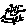

Hadhrat Jareer bin Abdullah (Radhiyallaho anho) says, "I heard
Rasulullah 
O my friends who wish to see the improvement of Islam and the Muslims; you have now clearly seen the cause of our fall. We do not stop even our own family from wrong-doing. We do not even think about stopping evil, leave alone doing something about it.